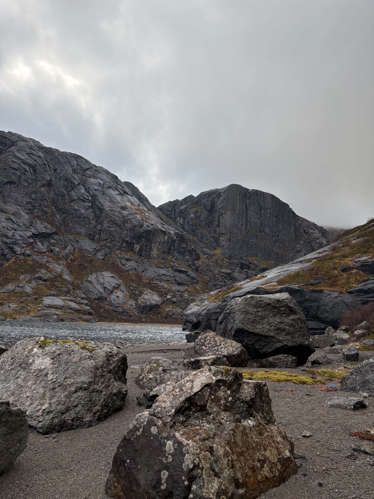
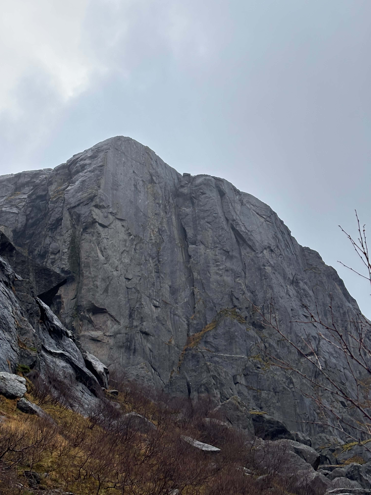
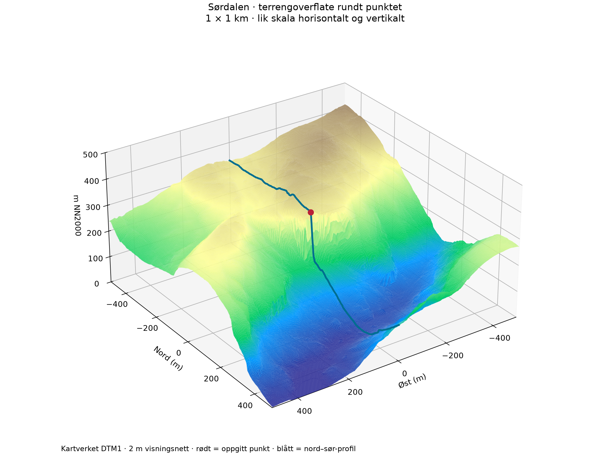
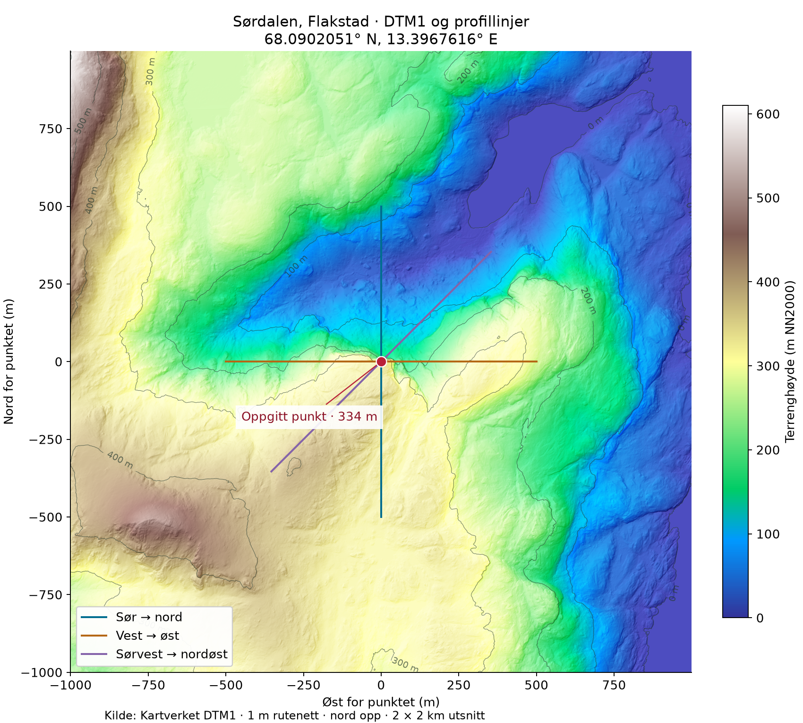

FELTRAPPORT / 05.11.2026
UBESTEGET PROSJEKT
En vegg
som venter.
Sørdalsveggen-prosjektet. En ubesteget vegg i Sørdalen, Flakstad — før første taulengde.
Se nærmere på prosjektet13.3967616° ELOFOTEN
NORGE
01 / PROSJEKTET
Fjellet først.
Linjen etterpå.
Sørdalsveggen-prosjektet dokumenterer en ubesteget vegg, som grunnlag for å utforske en mulig førstebestigning.
Bildene viser veggens former og strukturer. Kartverkets høydedata gir oss terrengets skala, helning og sammenheng med dalen rundt. Sammen gjør de prosjektet mer konkret, uten å fastslå en rute.
Veggen omtales som ubesteget etter opplysning fra prosjektets eier. Rute, gradering, taulengder, standplasser og nedstigning er foreløpig ikke dokumentert her.
Hvor går en mulig linje — og hvor starter og slutter selve veggen?
02 / FRA TERRENGET
Tre blikk på veggen.
Prosjektbildene er bevart uten inntegnede ruter. Åpne et bilde for å se originalen.


03 / TERRENGET I TALL
Nesten loddrett.
Men hva måler vi?
Rett nord for det oppgitte punktet faller terrengmodellen omtrent 170 meter over bare 20 meter horisontalt.
Det gir en profilhelning på 83,3° fra horisontalen. På delstrekningen 5–15 meter nord for punktet er helningen 84,6°. Dette gjelder valgte profilsegmenter, og er ikke en innmåling av hele fjellveggen.
- Profilhelning, første 20 m nord
- 83,3°
- Modellert fall over samme profil
- ≈170m
- DTM1 rutenett
- 1m
- Total vegghøyde
- Ikke avklart
HØYDEPROFIL GJENNOM PUNKTET
Fra kanten mot dalen.
Negativ avstand er før punktet langs valgt retning. Høydene er bilineært interpolert fra 1 m DTM1. Profilfiguren har ulik skala på aksene; les helningen fra beregningene.
Helning og totalt terrengfall
| Del av nordprofilen | Fall | Snitthelning |
|---|---|---|
| 0–20 m · rett under punktet | 170,0 m | 83,3° |
| 5–15 m · bratt del | 104,9 m | 84,6° |
| 0–300 m · videre ned i dalen | 316,0 m | 46,5° |
Det samlede fallet fra punktet til 300 m nordover er omtrent 316 meter: fra 334,3 til 18,3 m NN2000. Dette inkluderer det slakere terrenget nedenfor den bratte veggen. Vinklene er målt fra horisontalen.
Verken 170 eller 316 meter er en bekreftet vegghøyde. Vi har ikke identifisert topp og fot uavhengig av modellen. Høydeforskjellene beskriver terrenget langs bestemte profilsegmenter, og kan ikke brukes som taulengder. Loddrette partier og overheng kan ikke gjengis fullt ut i en modell med én høyde per celle.
04 / SE HELHETEN
Veggen i landskapet.
Roter modellen og se hvordan kanten ligger over dalen. Det røde punktet er det oppgitte koordinatet; den blå linjen viser nord–sør-profilen.

1 × 1 km utsnitt · 2 m visningsnett · ingen vertikal overdrivelse
Åpne 3D i eget vindu ↗05 / PLASSERING
Et punkt.
Tre retninger.
Det markerte punktet ligger på omtrent 334 m NN2000 i den interpolerte modellen. Det er høyden over høydereferansen — ikke høyden på klippen.
Kartutsnittet dekker 2 × 2 km. Alle de fire millioner rastercellene har gyldige høydeverdier. En gyldig celle betyr ikke nødvendigvis at det finnes et direkte laserpunkt akkurat der.
- Breddegrad
- 68.0902051° N
- Lengdegrad
- 13.3967616° E
- Sted
- Sørdalen, Flakstad

06 / BERGET BAK VEGGEN
Gammelt fjell.
Yngre landskap.
Ved koordinatet viser NGUs berggrunnskart anortositt — en dypbergart dominert av feltspatmineralet plagioklas.
Kartenheten er beskrevet som «anortositt til lysnoritt med plagioklas (3–20 cm)», med gabbro som tilleggsbergart. Den er del av Lofoten–Vesterålskomplekset og er angitt til 1800–1770 millioner år.
Punktoppslag i NGU Berggrunn N250, 5. november 2026. Regional kartmålestokk 1:250 000; lokal 1:50 000-enhet ga ikke treff. Dette er kartklassifisering ved punktet, ikke bestemmelse av en steinprøve fra veggen. Se det lagrede kartoppslaget ↗
- CA. 1,8 MILLIARDER ÅR SIDEN
Magma størkner på dypet.
Anortositten tilhører Lofotens store kompleks av gamle dypbergarter. Grovkornete mineraler forteller om en historie dypt i jordskorpen, lenge før dagens fjellvegger og daler fantes.
Regional forskning om Flakstadøy ↗ - OVER GEOLOGISK TID
Brudd, heving og erosjon.
Forkastninger, heving og langvarig erosjon har bidratt til å frilegge det gamle grunnfjellet i Lofoten. Bergartens alder må derfor skilles fra alderen på selve veggformen.
Regional landskapshistorie, side 32 ↗ - ISTIDENE OG TIDEN ETTER
Daler graves ut. Berg brytes ned.
Breerosjon har formet daler og bratte fjellsider. Frostforvitring og gravitasjon arbeider videre med sprekker og blokker. Slik landskapsforming gir en regional forklaring; dannelsestidspunktet for akkurat denne veggen er ikke fastslått.
NGU om istider og landskapsforming ↗
Bildene viser tydelige riss, flak og blokker. Bergartsnavnet og fotografiene alene sier ikke hvor dypt sprekkene går eller hvor faste de enkelte strukturene er.
07 / PLAN FOR BEFARING
Fra Kilan.
Over Ørnheia.
Prosjekteierens hovedidé er å komme til oversiden av veggen for rekognosering og mulig arbeid med topptau.
Kilan → Ørnheia → oversiden
Planen er å gå fra Kilan via Ørnheia og undersøke veggen ovenfra. Nøyaktig gangtrasé, adkomst til kanten og egnede innfestingspunkter er ennå ikke dokumentert. Det er heller ikke etablert en rappell- eller topptauplan i rapporten.
Kilan → Sørdalen → veggfoten
Et alternativ er å komme ned i Sørdalen for å se veggen fra foten. Også dette er en foreslått adkomst fra prosjekteieren, ikke et oppmålt GPS-spor eller en bekreftet ruteanvisning.
Kilan ligger ved E10 på vestsiden av området. Kartet viser Sørdalen nord for Ørnheia, på siden mot Nappstraumen. Punktet ved veggen er ikke en parkeringsplass eller et sikkert turmål for navigasjon helt til kanten.
REGNEEKSEMPEL / ÉN VEI
Hvor lang tid til oversiden?
Rette linjer Kilan → Ørnheia → punktet utgjør omtrent 2,75 km. Det er en geometrisk minsteavstand via disse referansepunktene. En gangbar trasé blir lengre, og samlet stigning er ikke målt.
Startverdiene under er derfor antakelser: 3,5 km, 400 høydemeter stigning, 2,5 km/t grunnfart og 20 minutter pause. Endre dem etter faktisk trasé, føre og sekk.
Modell: tid = distanse / grunnfart + stigning / 400 m per time + pauser. Dette er et enkelt planleggingsanslag, ikke målt gangtid. Retur, veifinning, rekognosering og arbeid ved veggen må planlegges i tillegg. Kartets SSR-referansepunkter ligger på omtrent 22 m ved Kilan og 338 m ved Ørnheia; de angir ikke startparkering eller valgt trasé.
En tørrere adkomst
Les vannveiene. Se etter myrsymboler, bekker og flate søkk i kartet. Dalfører og forsenkninger samler ofte vann; høyere, konvekse terrengformer kan være tørrere.
Velg fast underlag der terrenget tillater det. Undersøk ryggene mot Ørnheia fremfor å anta at den korteste linjen gjennom et søkk er best. Våte sva er ikke et godt alternativ til myr, og en tørrere variant må fortsatt være gangbar.
Tilpass etter forholdene. Kartet og DTM1 måler ikke dagens fuktighet. Ingen bestemt tørr trasé kan bekreftes uten befaring eller GPS-spor med observasjoner. Bruk bildet av adkomsten, lokale forhold og værutviklingen til å justere planen.
08 / ETTERPRØVBART GRUNNLAG
Dataene bak bildet.
Offisielle terrengdata fra Kartverket, lastet ned og kontrollert 5. november 2026.
DTM1 / klar
Offisiell GeoTIFF er lastet ned. 1 m oppløsning og full rasterdekning i analyseområdet er kontrollert.
LiDAR / under produksjon
Dekning er bekreftet for «NDH Lofoten 2pkt 2017». LAZ-uttrekk 1810966 er bestilt, men ennå ikke lastet ned. Eksportbestilling er ikke en ferdig dataleveranse.
Hva modellen forteller
Originalruten har 1 m celleavstand og flyttallshøyder. Analyseutsnittet er en tapsfritt komprimert kopi av originalverdiene. Profilene prøvetas for hver meter langs rutenettets nord-, øst- og nordøstretning.
Interpolert punkthøyde er 334,3 m. Rastercellen som inneholder koordinatet har høyde 332,1 m. Forskjellen følger av prøvetakingsmetoden ved en svært bratt kant.
Hva som fortsatt er åpent
Veggens nøyaktige høyde, eventuelle overheng og en mulig klatrelinje er ikke fastslått. Én meters rutenett er ikke et mål på høydenøyaktigheten.
2017-prosjektet er laserskanning med oppgitt tetthet 2 punkt/m². Nyere metadata fra 2022 gjelder bildematching, og er ikke brukt som erstatning for LiDAR i denne analysen.
Kilder, metode og full dokumentasjon
Terrengdata: Kartverket. Prosjektbilder: levert i prosjektmappen. Nettsiden bruker en enkel passordskjerm. Direkte filer kan fortsatt åpnes utenom passordskjermen.